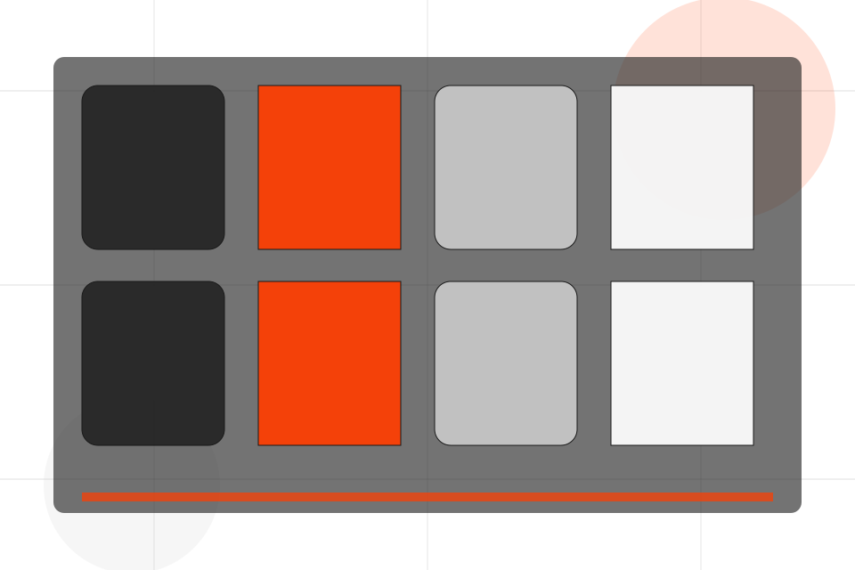
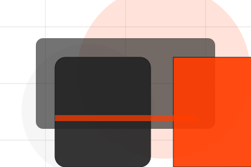
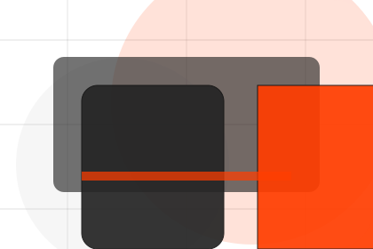
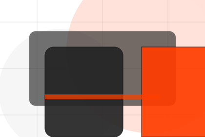
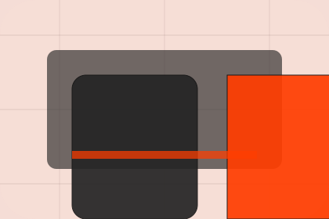

Pricing / 01
Pricing by Pulse
Pricing shaped for sports, fitness & recreation decisions.
Pricing opens as a clear sports decision hub: what Pulse offers, who it helps, why it matters, and which route to take first.
The first screen combines positioning, proof, primary action, and fast internal navigation, so people can act immediately or compare the rest of the pricing route with context.
Sports scopeCompare optionsRequest advice

Pricing / 02
Memberships
Memberships makes commercial comparison easier by showing fit, scope, and terms before sports visitors ask for the next step.
The layout keeps price-sensitive decisions honest: it separates starting scope, fuller delivery, and ongoing support so the visitor can ask a sharper question.
Explore PricingPulse frames memberships around fit, scope, and terms so visitors can compare cost without losing the outcome.
Join ClassPricing / 03
Packages
Packages makes commercial comparison easier by showing fit, scope, and terms before sports visitors ask for the next step.
The layout keeps price-sensitive decisions honest: it separates starting scope, fuller delivery, and ongoing support so the visitor can ask a sharper question.
View Pricing
Fit
Who the offer is for, which scope it suits, and when a different route may be better.
Scope
What is included clearly enough for sports, fitness & recreation visitors to compare value without hidden jargon.
Terms
The practical details that should be confirmed before someone asks to join a class.
Start
Who the offer is for, which scope it suits, and when a different route may be better.
ScopedGrow
What is included clearly enough for sports, fitness & recreation visitors to compare value without hidden jargon.
QuotedScale
The practical details that should be confirmed before someone asks to join a class.
RetainerPricing / 04
Dropin
Dropin makes commercial comparison easier by showing fit, scope, and terms before sports visitors ask for the next step.
The layout keeps price-sensitive decisions honest: it separates starting scope, fuller delivery, and ongoing support so the visitor can ask a sharper question.
Explore PricingFit
Who the offer is for, which scope it suits, and when a different route may be better.
Scope
What is included clearly enough for sports, fitness & recreation visitors to compare value without hidden jargon.

Terms
The practical details that should be confirmed before someone asks to join a class.
Pricing / 05
Training
Training explains the operating sequence so visitors can see how the first request becomes a clear recommendation and follow-up.
The steps are written from the visitor side: what they do first, what Pulse clarifies, what they receive, and how support continues.
Explore PricingHow visitors begin this route and what detail is useful at the first step.
What Pulse reviews, filters, or explains before recommending the next move.
What the visitor receives afterward, including support, proof, or a handoff to the next page.
Pricing / 06
Inclusions
Inclusions makes commercial comparison easier by showing fit, scope, and terms before sports visitors ask for the next step.
The layout keeps price-sensitive decisions honest: it separates starting scope, fuller delivery, and ongoing support so the visitor can ask a sharper question.
Explore Pricing- 01
Fit
Who the offer is for, which scope it suits, and when a different route may be better.
- 02
Scope
What is included clearly enough for sports, fitness & recreation visitors to compare value without hidden jargon.
- 03
Terms
The practical details that should be confirmed before someone asks to join a class.
Pricing / 07
Terms
Terms makes commercial comparison easier by showing fit, scope, and terms before sports visitors ask for the next step.
The layout keeps price-sensitive decisions honest: it separates starting scope, fuller delivery, and ongoing support so the visitor can ask a sharper question.
Explore PricingPulse frames terms around fit, scope, and terms so visitors can compare cost without losing the outcome.
Join ClassPricing / 08
Comparison
Comparison makes commercial comparison easier by showing fit, scope, and terms before sports visitors ask for the next step.
The layout keeps price-sensitive decisions honest: it separates starting scope, fuller delivery, and ongoing support so the visitor can ask a sharper question.
Explore Pricing
Fit
Who the offer is for, which scope it suits, and when a different route may be better.
Pricing / 09
Join
Join makes commercial comparison easier by showing fit, scope, and terms before sports visitors ask for the next step.
The layout keeps price-sensitive decisions honest: it separates starting scope, fuller delivery, and ongoing support so the visitor can ask a sharper question.
Explore PricingFit
Who the offer is for, which scope it suits, and when a different route may be better.
Scope
What is included clearly enough for sports, fitness & recreation visitors to compare value without hidden jargon.
Terms
The practical details that should be confirmed before someone asks to join a class.
Pricing / 10
Join Class
Pulse closes the pricing route with a clear action, a quick reminder of the value, and a low-friction way to join a class.
Visitors who are ready can use the primary action. Visitors who are still comparing can scan the section links, proof, and support routes before they join a class.
Join ClassThe final block keeps the choice simple: act now, compare one more proof route, or send enough detail for a focused response.
Join Classprogress and belonging
Join Class
A fitness site with athlete-scale hero, program cards, coach proof, schedule filters, and membership CTAs. Pricing ends with a direct path to join a class, plus enough context for visitors who still need to compare.

Join ClassNotes
Fitness guidance should be adapted to health status and professional advice where needed.